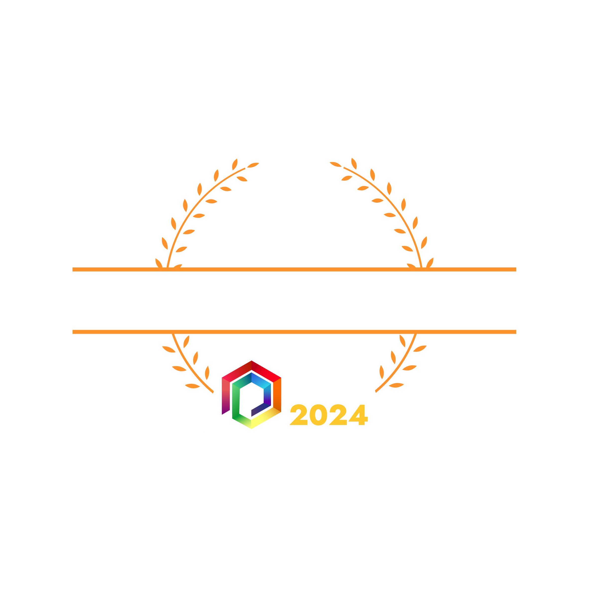

Contibution
Unity Sprite Sheet Extractor/Importer
Sprite Sheet Animator
Scripted Animation, Unity To TGE
This game was made in
TGE (The Game Assembly in house engine)
Unity Sprite sheet Extractor/Importer
For the project we needed an easy, stressfree and effective way to switch between different textures when animating a sprite.
I had done this before so i took the task and at first made a simple sprite switcher to animate the sprite, this method needed to create a bunch of textures and store it in memory and thus was a no go.
To make this more effective i used the meta files from unity when editing and exported the meta into our project to get the min and max coordinates on the sprite.
with the unity sprite ".meta" files, i could import these and create textures from them in our engine. I then used these rects i get and animate the sprite.
Example of a sprite ".meta" file
- std::wstring filePathWide = spriteSheet.GetFilePath();
- // Add meta to the end of string
- filePathWide += L".meta";
- std::ifstream file(filePathWide);
- std::string line;
- bool foundInformation = false;
-
- while (file.good())
- {
- // Search for the information we want and run if it finds one
- while (std::getline(file, line))
- {
- if (line == "rect:")
- {
- foundInformation = true;
- break;
- }
- }
- if (!foundInformation)
- continue;
- if (line == "rect:")
- {
- std::getline(file, line);
- std::getline(file, xString);
- std::getline(file, yString);
- std::getline(file, widthString);
- std::getline(file, heightString);
- x = SpriteSheet::SearchForNumber(xString);
- y = SpriteSheet::SearchForNumber(yString);
- width = SearchForNumber(widthString);
- height = SearchForNumber(heightString);
- }
- foundInformation = false;
- }
- file.close();
Code showing how to extract these from meta file
Sprite Sheet Animator
After importing ".meta" files the animation of these sprites could begin. The way they load in is we have the name and extension of the texture t.ex "T_Player_C.dds" and just add ".meta" at the end.
All these rects in the File could then be loaded into a list to easily and effectivly access them later.
in the animator class i have a variable that stores what sprite index is suppose to be used to cut out an area of the bigger texture.
- void TGE_Animator::Update()
- {
- if (myCurrentAnimation == nullptr || myCurrentAnimation->frameCount == 0) return;
- if (myCurrentAnimation->paused || (!myCurrentAnimation->loopAnimation && myCurrentFrame == myCurrentAnimation->spriteSheet.GetFrameAmount() - 1)) return;
- while (myTimeUntilNextFrame <= 0.0f)
- {
- // Prevent wrapping if looping is not desired
- if (myCurrentFrame + 1 >= myCurrentAnimation->frameCount && !myCurrentAnimation->loopAnimation)
- {
- myTimeUntilNextFrame = 0.0f;
- break;
- }
- myCurrentFrame = (myCurrentFrame + (mySpeedMultiplier < 0 ? myCurrentAnimation->spriteSheet.GetFrameAmount() - 1 : 1)) % myCurrentAnimation->spriteSheet.GetFrameAmount();
- if (myTimeUntilNextFrame < -10)
- myTimeUntilNextFrame = -0.5f;
- myCurrentAnimation->spriteSheet.SpriteTransformApply(myCurrentFrame, sprite, myFacingDir);
- myTimeUntilNextFrame += myCurrentAnimation->frames[myCurrentFrame];
- }
- myTimeUntilNextFrame -= Time::DeltaTime() * std::abs(mySpeedMultiplier);
- }
Run animation from the main character in Traum
Scripted Animation
In Traum we had to make a way to move the monster on a path where the level designers could move, rotate and scale the object how they wanted and when they wanted it.
I used unity for this task as well but this time using unity's Animaton tool. In unity Level designers used the animator and keyframes to move, rotate and scale right when it was needed in the boss sequence.
In this place i also used unity's ".animation" file since its just plain text and i could extract position, rotation and scale.
In hindsight i would say that this is not a very efficient solution since there is alot of extra data in these unity ".animation" files that is not needed so instead directly export all of the properties to a json.
Or if there is no way to acces these in Unity c# script you could make an external script that reads and extracts all properties from the ".animation" file and output into another file,
then you would save a bit of storage.
I still like the implementation and an interesting way to go about solving the problem.
Run animation from the main character in Traum
Closing Thoughts
This was one of my favourite games to work on, since i got to work with tools i enjoy and make fun features for Traum.
Traum is also a three time Swedish Game Awards winner, everyone in the developent team was amazaing and we made a very cool, fun and enjoyable game together.
Thanks to everyone at "Morbid Games"
If you want to learn more and play our amazing game follow the Link below
TRAUM